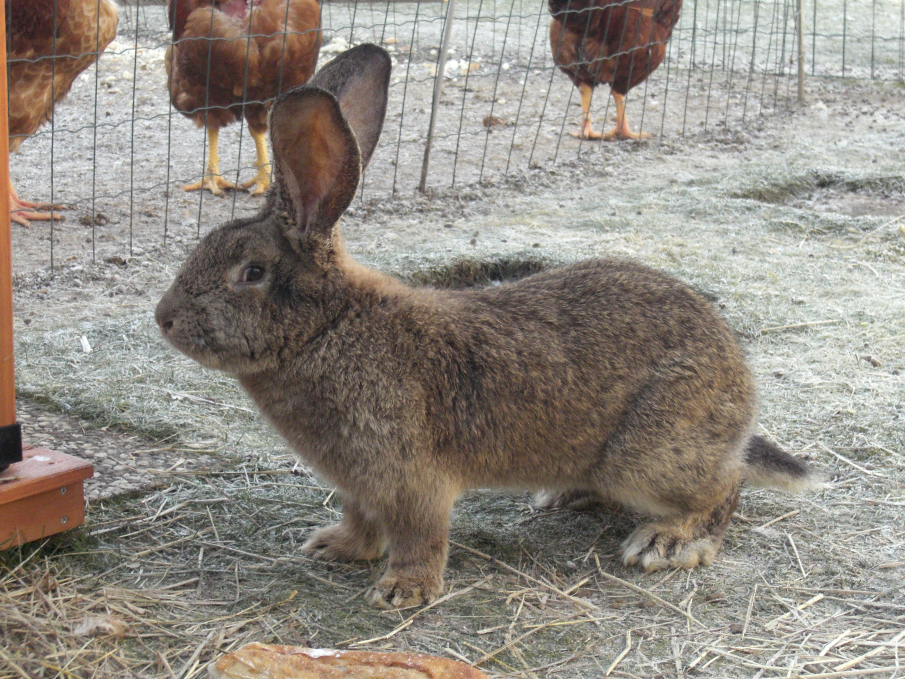

Il existe plusieurs races de lapins domestiques. Je vous propose ci'dessous un tableau contenant quelques exemples de races de lapins domestiques. Vous pourrez voir qu'il existe des races de lapins de taille différentes et que certains lapins ont un pelage spécifique.
Vous pouvez aussi, si vous le voulez consulter la liste complète des races de lapins sur wikipedia: liste des races de lapins.
| Nom de la race | taille | région d'origne | robe | Photo |
| Géant des Flandres | Géant | Belgique | gris garenne, gris lièvre, gris foncé, gris fer, noire, bleue, gris bleu, bleu-gris garenne, couleur lièvre, couleur jaune |  |